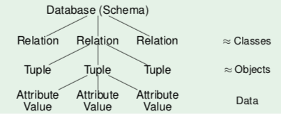

all table entries are data values that conform to some selection of data types.
example data types:
-
strings:
-
VARCHAR(n)strings up to n characters, use this if you know a certain maximum length -
TEXTvariable length up to 2 GB (but does not always take up 2 GB)
-
-
numbers:
-
INTinteger -
NUMERIC(n)decimal number with n digits
-
- date and time
-
binary data, like a
BLOB(binary large object)
domain val(D) of a type D is the set of possible values for that type
with SQL, we can create our own application-specific domains (new data types). examples:
-
CREATE DOMAIN EXNUM AS NUMERIC(2) -
CREATE DOMAIN EXNUM AS NUMERIC(2) CHECK(VALUE > 0)
relation schema s (schema of single relation) defines:
- finite sequence A₁..An of distinct attribute names
- for each attribute Ai a data type (domain) Di
written as: s = { A₁ : D₁, ..., An : Dn }
SQL notation:
CREATE TABLE exercises
(CAT CHAR(1),
ENO NUMERIC(2),
TOPIC VARCHAR(40),
MAXPT NUMERIC(2))
a relational database schema S defines:
- finite set of relation names {R₁, ..., Rm}
- for every relation R a relation schema sch(R)
- a set of C integrity constraints
so S = ({R₁, ..., Rm}, sch, C)
used to formalize table rows.
so e.g. in table exercises: (’H’, 1, ’Rel.Alg.’, 10)
let a database schema ({R₁, ..., Rm}, schema, C) be given.
a database state I for this database schema defines for every relation name Ri to a finite set of tuples I(Ri) w.r.t the relation schema Schema(Ri)
relational model allows missing attribute values.
these are represented by NULL. not the same as 0 or an empty string.
used to model scenarios like:
- a value exists IRL but is not known
- no value exists
- attribute is not applicable
- any value will do
without null values, you'd have to split a relation into specific relations, like student_with_email and student_without_email. or the users would have to make up a fake value, which would not be uniform and you'd have no idea how to query.
problems:
- no clear semantics, since null values can be used in many scenarios
-
SQL has three-valued logic (true, false, unknown), so if you want to check for null, you have to say
WHERE A IS NULL
so declaring many attributes as NOT NULL simplifies the program, but only do that if you're sure that there's always a value.
the database should be an image of the relevant subset of the real world. plain definition of tables often allows too many database states.
Integrity constraints (IC): conditions which every database state has to satisfy, restricting the set of possible database states.
In CREATE TABLE, possible constraints:
-
NOT NULL: no value in this column can be null -
Keys: each key value can only appear once -
Foreign keys: values in a column must appear as key values in another table -
CHECK: column values have to satisfy a given predicate
Why specify constraints:
- some protection against data input errors
- document knowledge about database states
- enforce law/company standards
- protect against inconsistency
- simplify queries in programs
key of relation R is attribute A that uniquely identifies tuples in R. this refers to all possible database states, not just the current one.
key constraint is satisfied in database state iff all tuples have different values for A.
once something is declared as a key, the DBMS refuses insertion of tuples with duplicate key values.. this refers to all possible database states, not just the current one.
keys can consist of several attributes, then they are composite keys. if columns A,B form a composite key, there cannot be two tuples t ≠ u which agree in both attributes. keys should never change.
a key constraint becomes weaker (less restrictive) if attributes are added to it.
a key is minimal if no attribute can be removed without destroying the key constraint.
a relation may have more than one minimal key. one is the primary key, which cannot be null. other keys are alternate/secondary.
choosing a primary key: single simple attribute, never updated
use key attributes to uniquely reference a tuple, like a pointer. denoted with arrows:
RESULTS (SID → STUDENTS,
(CAT, ENO) → EXERCISES,
POINTS)
STUDENTS (SID,FIRST,LAST,EMAIL)
EXERCISES (CAT,ENO,TOPIC,MAXPT)
to refer from relation R to tuples of S, add primary key attributes of S to attributes of R. only stable if the logical 'address' of a tuple does not change.
implements a one-to-many relationship.
an existence guarantee is needed.
foreign key constraints in SQL:
CREATE TABLE RESULTS (
...
FOREIGN KEY (SID) REFERENCES STUDENTS(SID)
)
this ensures that every referenced row exists, which ensures referential integrity of the database.
these operations violate the constraints:
- insertion into table with foreign key without matching referenced tuple. DBMS rejects update.
- deletion from table if the tuple is referenced via foreign key. either DBMS rejects, both are deleted (cascade), or foreign key is set to null.
only keys may be referenced. a table with composite key must be referenced by composite key that has same number of attributes.